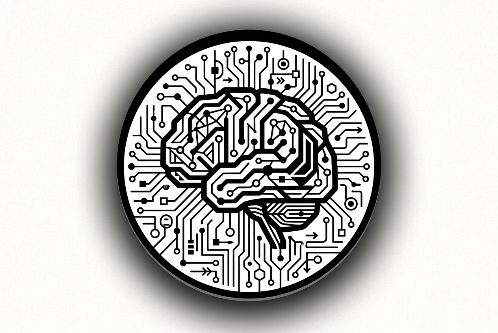

🔍 ZoomWichtige Denker
- Daniel Dennett: Bewusstsein, Kognitionswissenschaft.
- Martha Nussbaum: Fähigkeitenansatz, Ethik.
- Judith Butler: Gender‑Theorie, performative Identität.
- Byung‑Chul Han: Digitale Gesellschaft, Leistungskapitalismus.
Kerngedanken
Die Gegenwart stellt Fragen nach künstlicher Intelligenz, digitaler Identität, globaler Ethik und dem Verhältnis von Bewusstsein zu Technologie in den Mittelpunkt philosophischer Reflexion.